|  |
written by AALHAD PATANKAR AND NATALIE GREENphotos by AUSTIN YUpage by LENA CORREIA, MAHIR EUSUFZAI, ELISE YUEN and MCKENNA GALVIN |
As the poster child of the UCLA campus, Royce Hall makes itself known to students in many ways. To some, it’s a place to indulge in a night of music or theater on a college student budget. To others, it’s a stage to showcase their culture night performance to family and friends, while to others still, it’s a building that houses their Friday discussion sections.
Behind its doors, however, the people who work to keep the hall running – many who have been doing so for decades – describe it as something else.
The stories that follow are just a few of those that make up the heart, brain and soul of Royce Hall.
Memories of Royce
Dedication of Royce Hall

Photo: Austin Yu/Daily Bruin Senior Staff
UCLA commencement with the Shah of Iran

Photo: Austin Yu/Daily Bruin Senior Staff
The 1964 UCLA commencement ceremony was marked with controversy, as Mohammed Reza Shah Pahlavi, then-Shah of Iran, was to receive an honorary degree from the university.
Jimmy Klain, who was in charge of organizing the ceremony, said it was one of the most difficult events he has ever managed.
At the time, Klain said, the Shah ran an oppressive regime which the Persian student community was intimately aware of and strongly opposed. The students, he said, wanted to protest in a way they couldn’t in Iran. However, it was Klain’s job to make sure the event proceeded smoothly.
Finally, on the day of the event, every contingency was planned for, Klain said, and everybody was sitting down and listening to the speeches on stage, when an airplane making a loud rumbling sound flew over with a message for the Shah.
Equipped with a loud motor that drew the crowd’s attention upward, the plane towed a banner that read, "Need a fix? See the Shah" – poking at the Shah’s rumored drug involvement.
Olympics 1984

Photo: Austin Yu/Daily Bruin Senior Staff
In the summer of 1984, the Olympics came to Los Angeles. UCLA was designated as the athletes village, where all the athletes participating in the tournament resided. Accompanying the athletic events was a citywide arts festival in which venues across town hosted performances of world arts and cultures. As part of this festival, UCLA hosted British theater troupe Royal Shakespeare Company as well as Italy’s Teatro di Milano.
Also in 1984, Jessica Wodinsky – in her first year out of college – began her 30-year career at Royce Hall as a member of the technical staff.
Wodinsky said that it was one of the first times she remembers seeing people from all over the world in one place. She said it was an eye-opening experience for a fresh graduate, holding her first full-time job, to work with staff from England, Italy and countries from all over the world on such a grand event.
“Now we take it for granted that we see people from all over the world,” Wodinsky said. “At the time, that didn’t happen that often. We felt very special about the whole thing.”
Wodinsky said one of her favorite parts of the experience was going out for drinks with Sir Ian McKellen who, at the time, was known not as a film actor, but as a trained Shakespearean actor instead.
“He’s a really low-key guy,” Wodinsky said. “I have a deep respect for him.”
Superhighway Summit

Photo: Austin Yu/Daily Bruin Senior Staff
In January 1994, several of the nation’s leaders in business, academia and government gathered to discuss the implications of a new telecommunications network.
Keynote speaker and former Vice President Al Gore spoke to a crowd of more than a thousand, introducing the “information superhighway” – a concept we now know as the Internet.
Ron Jarvis said he remembers working intimately with the Secret Service to organize the security for the high-profile event.
At one point, Jarvis said, the Secret Service asked Jarvis to get Gore’s lectern off the stage.
“It was a beautiful lectern,” Jarvis said. “It had the seal of the vice president – it was very fancy.”
Jarvis said he ran to the stage and went to yank it, and then realized that the lectern weighed about 300 pounds.
“They just started laughing,” Jarvis said. “They thought it was the funniest thing.”
Northridge Earthquake
In 1994, a 6.7-magnitude earthquake, centered in Reseda, wreaked havoc on Los Angeles and its suburbs. Along with an injury count of more than 5,000, the earthquake shattered the city’s infrastructure, making it one of the costliest natural disasters in U.S history.
Royce Hall was no exception to the damage – it was left devastated. Ron Jarvis said he was responsible for surveying the building’s damages, and could not believe the extent of the destruction.
“After the first day, I came back in tears,” Jarvis said. “I was crying – I couldn’t believe it. The crew asked me, ‘What’s the matter?’ I said, ‘Well, we’re going to have to close.’”
During the period of closure, shows and functions were relocated to the Wadsworth Theatre in West Los Angeles, along with the large staff who were responsible for putting them together.
“That was a really tough time for the people that were here,” Jessica Wodinsky said*. “To be out of the building for four years was a trip – we had to really pull together.”
Four years and over 25 million pounds of steel and concrete later, Royce Hall reopened, resuming all activity.
"Slava’s Snowshow"
In January 2007, Royce Hall featured the renowned stage performance “Slava’s Snowshow,” conceptualized and staged by Russian performance artist and clown Slava Polunin.
Ron Jarvis said it was one of the most bizarre events he’s witnessed.
“It was intermission,” Jarvis said. “One of my little ushers came and said ‘Ron, the clowns are fighting.’”
“So I said, ‘Well, I used to be a clown, you know, that’s what we do.’”
“No, they’re fighting with the audience,” the usher said. “They’re fighting by the stage."
Jarvis said he made his way over to the stage to investigate the commotion.
“I go down to the stage, and our sound guy is sitting on a guy,” Jarvis said. “There is another guy who’s got a clown grabbed by the shirt and they’re in each other’s faces, screaming.”
“I watched this guy head-butt the clown and the clown let go, and I got a hold of the guy’s arm, and he’s swinging me around,” Jarvis said. “I don’t weigh anything, you know.”
Finally, after the two parties were sequestered to the back of the theater, the police arrived, Jarvis said, and asked him what happened.
“One guy head-butted a clown,” Jarvis said he told the police.
“Which one?” the cop said.
“The one with the extra eyebrows.”
Sure enough, Jarvis said, the attacker had an incriminating imprint of the clown’s eyebrows stuck on his face.
After handcuffing the perpetrator, the cop looked at his record and asked him, “You work for the department of corrections?”
“Yes,” the handcuffed man said. “I am a psychologist.”
Coldplay

Photo: Austin Yu/Daily Bruin Senior Staff
British rock band Coldplay set upon Royce Hall on May 19, 2014, to celebrate the international release of its sixth studio album, “Ghost Stories.”
The concert was Coldplay’s only West Coast appearance during the band’s six-city world tour, and tickets, priced at $1,000, sold out within minutes.
It was one of the biggest events the hall has accommodated, said Ron Jarvis, who said he remembers managing the wild crowd as a challenging task. “That was insane,” Jarvis said. “We were just going crazy.”